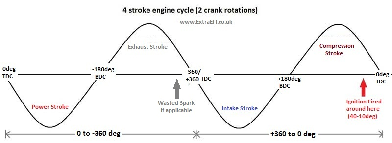

|

The cycle of a 4 stroke engine is 720deg of the crank, see above. Timing for fueling is worked out the same as ignition, in that a positive number is Before Top Dead Centre (BTDC), but only for the compression stroke. So we have can have up to +360deg (Before TDC of compression) and -360deg (After TDC Compression) As you can see in the above drawing, the ignition is usually fired just before the
TDC of the compression stroke (40-10deg) i.e. a positive number!
If we now look at the inlet opening position relative to the engine cycle for each cylinder we can see that it starts to open a little before the end of the exhaust stroke and continues to stay open for a little time in the compression stroke. Like everything there are exceptions, but this is the usual setup.
Most engines like to have all of the fuel injected onto a shut inlet valve(s) for maximum evaporation and mixture into the air for each cylinder. So in the above case we need to have finished injecting at around -340deg, or just before then as the fuel will take a small amount of time to reach the valve. So the valve opening angle is a good starting point, but it may not be the optimum point for your engine, you will need to try all 720degs (try 5 deg steps) to figure out just where your engine performs best, you should be able to tell at idle. Simply fine tune it until you get a smooth running engine. Some people report that adjusting the angle for the richest mixture (lower AFR) is the best approach as this means more of the fuel is being burnt, therefore mixed. After getting it as rich as possible simply lean out the mixture using the VE table. It's worth saying at this point that you need a well tuned VE table before starting to play with sequential fuel, so ensure your engine is running well before starting to dive into this too deep.
The angle that the injectors are fired can then be fine tuned (trimmed) using a table with RPM and load to allow for changes in air speed, etc. General opinion is that the fuel needs to be delivered earlier as RPM increases, due to intake air and engine speed. A rule of thumb is 40deg earlier for every increase of 1000rpm up to around 4000-5000rpm. At high RPM the PW's are usually so long that timing is no longer critical and air speed is also much higher, so any gains are minimal as rpm increases.
Another advantage of the Semi-Full Sequential setups, is that each injector bank can be trimmed by +- 12% to fine tune the fueling from the main Fuel table. So on Semi-Seq you could tune each pair of injectors (depending on how it was wired) and on fully sequential each cylinder could be tuned to match the others. This means using EGTs or one wideband lambda / Cylinder, so its not an easy thing to do, but it is possible. For more info see the EGT Tuning Page.
MegaSquirt and Sequential Injection:
The MS2-Extra code (V3.0 codes and above) and the MS3 ECU code can run many engines in semi-sequential or full sequential Injection.
Semi-Sequential can be run with a standard MS2-Extra or MS3 using the existing fuel injection drivers on the main board. Certain conditions do apply, you will need a crank signal, e.g a 36-1 (Ford), 60-2, etc, to run Semi and a cam signal to run Full Sequential. Setups using an EDIS module (12 pinned device) or a distributor signal won't work Im afraid.
MS2-Extra will only run up to a 4cy in Full Sequential. The ECU will also need modifying with 2 additional injector drivers. See my new MS2X Board, this allows semi-sequential on a 6cy and an 8cy as well as full sequential on a 4cy.
MS3 will only run Full Sequential with an MS3X Expansion Board, this allows it to run up to 8cy in Full Sequential.
All MS ECU's will need to drive high impedance injectors for fully sequential injection, lo-impedance injectors will need resistors adding in series to make them effectively high impedance. Semi Sequential (4cy) can run lo or hi impedance injectors as this uses the main 2 injector drives which have PWM, but a 6 and 8 cy would also need High Impedance Injectors to run semi-seq using an MS2X or the MS3X cards.
Semi-Sequential:
(No cam signal needed)
The timing of the fuel injection can be controlled so that the fuel is sprayed in once per crank revolution at an optimum time for your engine, allowing for better fuel evaporation into the intake air stream. The gains are not quite as much as Fully Sequential, but a smoother idle and a better throttle responce can come from tuning your engine using this method. On an even fired engine (99% of engines) pairs of pistons move up and down together (usually 1+4 - 2+3 on a 4cy). One of those pairs will be on the compression stroke and one on the exhaust stroke as they raise up the cylinder. These are the same cylinders that we pair for Wasted Spark.

4 Cylinder Semi-Seq:
(No hardware changes for 4cy engines)
The MS ECU fires each pair of cylinders with half the required amount of fuel every crank rotation, remembering that a 4 stroke engine only needs fuel once per two crank rotations. This needs the 2 Injector banks wired so Bank 1 is connected to cy1 and it's pair, then Injector Bank 2 connects to the other pair of cylinders.
Note: For MS2-Extra you will need to set the Engine Constants for 2 squirts/engine cycle and Simultaneous Injection to keep the req_fuel correct.
So a firing order of 1,3,4,2 connect Injector Bank1 (A) to cylinders 1+4, Injector Bank 2 (B) to cylinders 3+2.

6 Cylinder Semi Seq:
i) Option 1 (No hardware changes needed) This is different to the above as it will only squirt using the MS ECU's Injection Bank 1. This is because we only have two injector banks as standard and firing 3 pairs with 2 banks doesn't work out. So we fire all 6 at a rate of 3 times/crank revolution, a sixth of the required fuel, 6 times/engine cycle.
This means wiring all 6 injectors to Injection Bank 1.
Note: For MS2-Extra you will need to set the Engine Constants for 6 squirts/engine cycle and Simultaneous Injection to keep the req_fuel correct.
ii) Option 2 needs another injector driver adding to the ECU, this then gives you three banks of injectors that can be fired in pairs at a specific crank angle during their stroke (once per crank rev/twice per engine cycle).
This means wiring each Injection Bank output to pairs of cylinders. Firing order 1 - 5 - 3 - 6 - 2 - 4 would be wired Bank1 - 1+6, Bank2 - 5+2, Bank3 - 3+4
Note: For MS2-Extra you will need to set the Engine Constants for 2 squirts/engine cycle and Simultaneous Injection to keep the req_fuel correct.
8 Cylinder Semi Seq:
i) Option 1 (No Hardware changes) Like the 4 cylinder engines, but a quarter of the required fuel is squirted in twice per crank revolution (every 180deg) and it uses both Injection Banks on the MS ECU.
This means wiring the two Injector Banks so that output Bank 1 connects to 1,4,6,7 and Bank 2 to 8,3,5,2 for a firing order of 1 - 8 - 4 - 3 - 6 - 5 - 7 - 2
Note: For MS2-Extra you will need to set the Engine Constants for 4 squirts/engine cycle and Simultaneous Injection to keep the req_fuel correct.
ii) Option 2 needs another two injector drivers adding to the MS ECU. This then gives you 4 banks that can fire the injectors in pairs at a specific angle during their stroke. (once per crank rev/twice per engine cycle)
This means wiring each Injection Bank output to pairs of cylinders. Firing order1 - 8 - 4 - 3 - 6 - 5 - 7 - 2 would be wired Bank1 - 1+6, Bank2 - 8+5, Bank3 - 4+7, Bank4 - 3+2
Note: For MS2-Extra you will need to set the Engine Constants for 2 squirts/engine cycle and Simultaneous Injection to keep the req_fuel correct.
Fully Sequential:
(Cam sensor needed)
This allows you to fire all of the required fuel for each independant cylinder at a specific time during the cycle of the piston. This means wiring each injector back to the MS ECU so that the controller can fire them singularly at a specified time witin the engine cycle. This setup would need a crank signal (EDIS 12 pinned modules and distributor setups won't work) as well as a cam signal for the ECU to work out which cylinder is on it's compression stroke, etc.
MS2-Extra can achieve this on an engine up to a 4 cylinder by adding two new injector drivers to the ECU using my MS2X card. (see website for details)
MS3 will need either extra injector drivers adding (as MS2-Extra) or you can use the MS3X Expansion Board. This could then run up to an 8cy engine sequentially.
Note: MS2-Extra ECUs and MS3 ECUs can only use high impedance injectors, lo-impedance will need resistors in series with them.
If your interested in running your MS with this function then see Sequential Fuel Settings for MS2-Extra or Sequential Fuel Settings for MS3
|